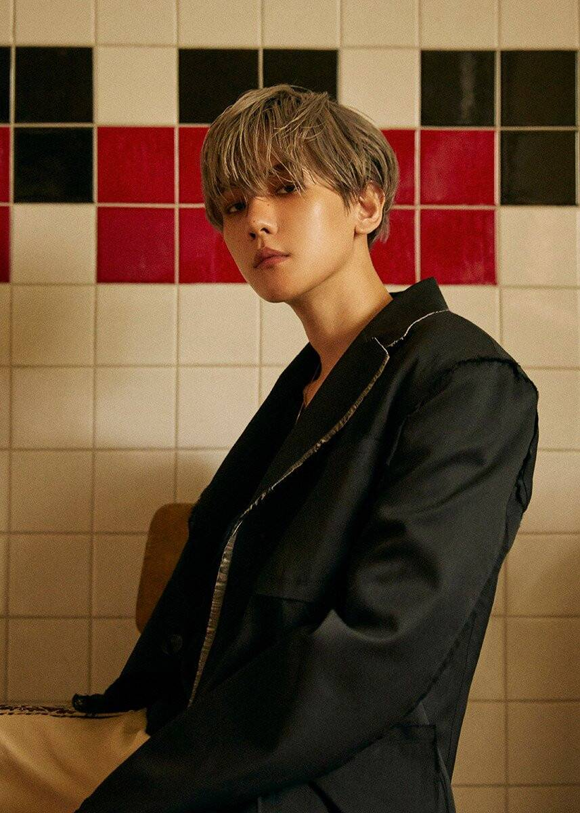
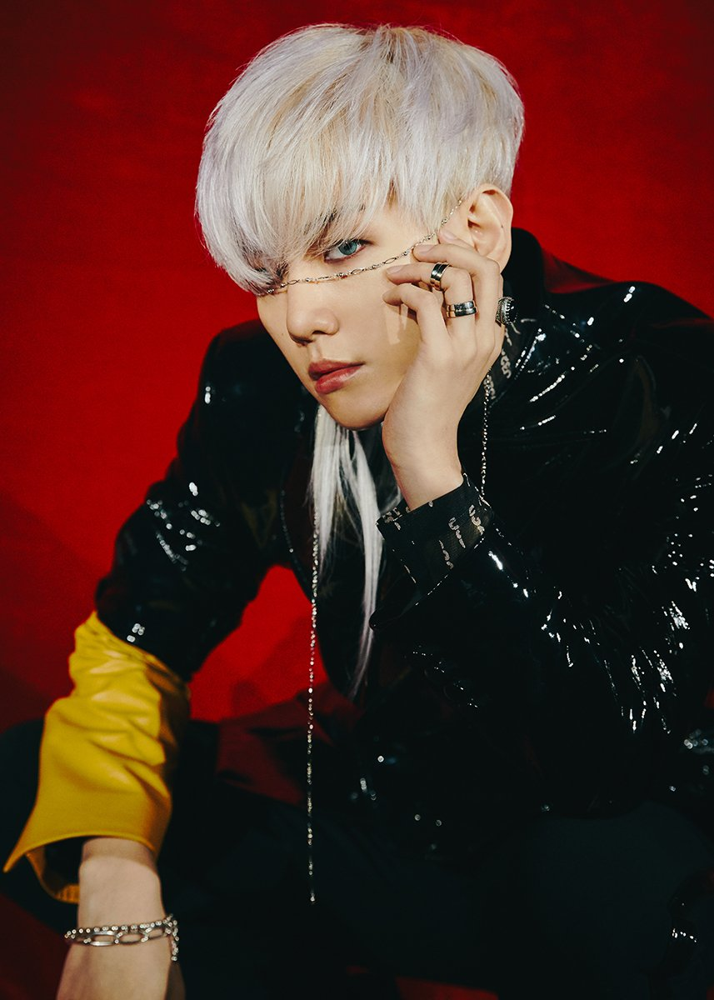

Я вітаю тебе на цій сторінці про популярну корейську
группу ЕХО, залишайся з нами:)

Я вітаю тебе на цій сторінці про популярну корейську
группу ЕХО, залишайся з нами:)
| Псевдонім | Бекхьон |
| Справжнє ім'я | Бен Бекхьон |
| Родився | 6 травня 1992 року |
| Родом з | Пучхон, Кьонгідо, Південна Корея |
| Ріст | 174 см |
| Група крові | O |
Бен Бекхьон (кор. 변 백현, англ. Byun Baek-hyun), народився 6 травня 1992 року, Пучхон, Кьонгідо, Південна Корея. Південнокорейський співак і
актор. Є учасником хіп-хоп групи EXO, і її
підгрупи EXO-K і підрозділи EXO-CBX. Бекхьон
почав роботу в SM в травні 2011р.
Він був останнім, кого набрали в EXO-K в 2011 року. Бекхьон почав роботу в
SM в травні 2011р. 10 липня 2019 дебютував сольно з міні-альбомом
City Lights.
Він знімався у таких серіалах - “Для тебе в усьому цвіту”(2012 рік), “ЕХО по сусідству”(2015 рік), “Пурпурові серця: Корьо”(2018 рік).
Також 25 травня 2020 року в Бекхьона випуск його другого сольного альбома “Delight”.
 